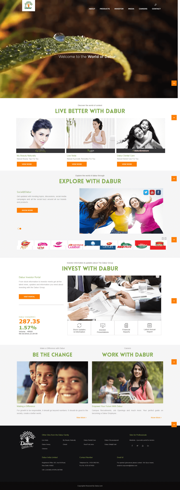
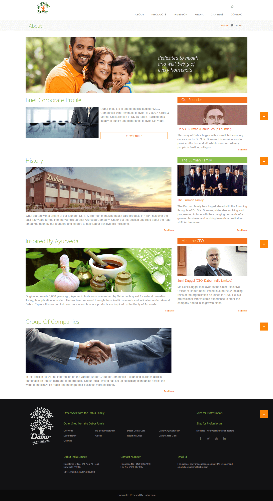
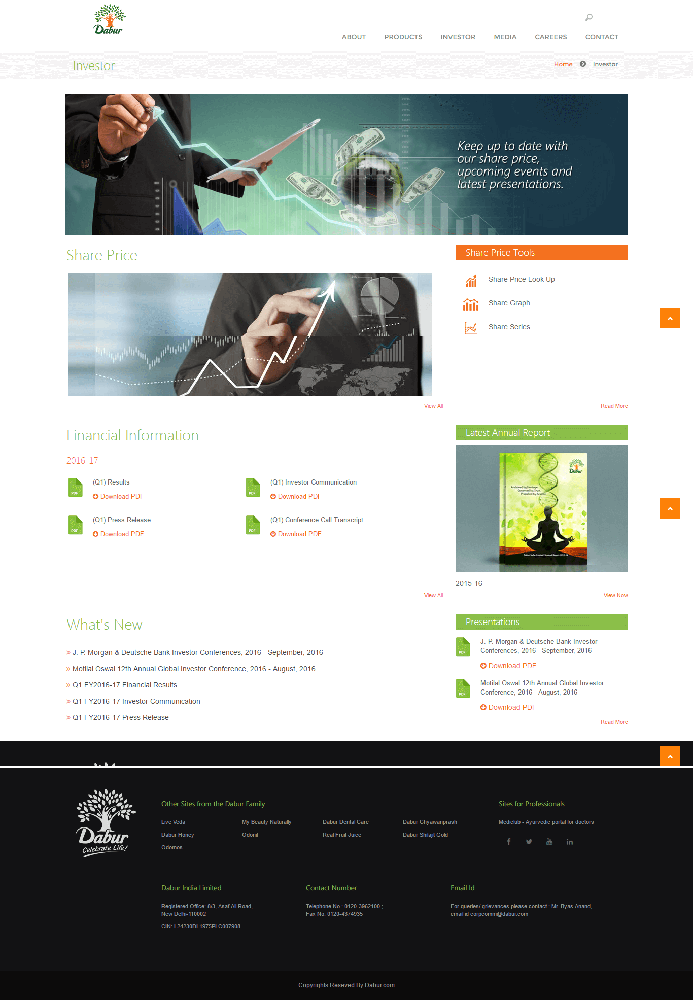
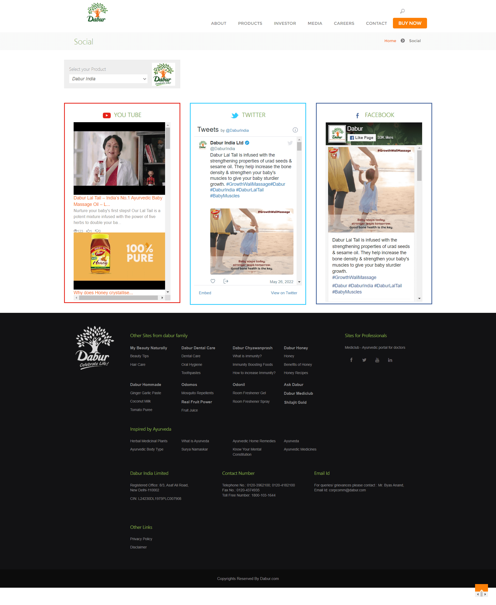

← Back to work
One digital root.
Dabur · Enterprise Website
One digital root.
Thousands of pages.

Project overview
A heritage brand.
A modern publishing system.
We revamped Dabur's corporate website as a reusable CMS ecosystem—bringing a vast body of brand, business and investor content into one coherent experience.
The work balanced the warmth of a nature-led consumer brand with the clarity required by corporate audiences. A modular UI system gave editors dependable templates while allowing different journeys to retain their own purpose and hierarchy.
- Scope
- Website Revamp
- Foundation
- CMS Templates
- Experience
- UI + UX
- Content
- ~2,000 Pages
The platform challenge
Design for every audience.
Build once for scale.
Dabur spans health care, personal care, food and beverages, with products reaching consumers across more than 120 countries. The platform needed to make that breadth navigable without flattening it into one generic journey.
The experience problem
Many destinations.
No room for fragmentation.
Consumers, investors, media, prospective employees and corporate stakeholders arrive with completely different needs, language and levels of urgency.
At this scale, every one-off layout becomes operational debt. The interface had to give content teams repeatable structures without making every page feel identical.

The CMS design system
Templates that hold.
Content that can move.
Shared shell
Global navigation, search, breadcrumbs and footer logic create familiarity across the entire ecosystem.
Modular templates
Flexible page families support brand stories, corporate information, media, careers and product discovery.
Clear hierarchy
Headings, content rails, calls to action and utility patterns help users scan dense information quickly.
Editor confidence
Repeatable rules make publishing faster and protect consistency as the platform continues to grow.
Interface showcase
One system.
Distinct journeys.
Each page family uses the same foundational logic while changing emphasis for its audience—from heritage storytelling to live market information.
Corporate storyHeritage, leadership and Ayurveda

Investor experienceReports, results and share-price tools

Connected contentSocial channels inside the brand ecosystem

The outcome
Complex behind the scenes.
Clear at every click.
The revamp turned a large corporate content estate into a structured digital platform—recognisable as Dabur, practical for editors and easier for audiences to navigate.
System consistency
Shared components give thousands of pages one dependable experience language.
Audience clarity
Consumer, corporate and investor journeys each foreground the information that matters.
Publishing scale
A CMS-template foundation supports continued growth without repeated redesign.
Rooted in the brand.Ready to keep growing.
Have a complex platform to simplify?